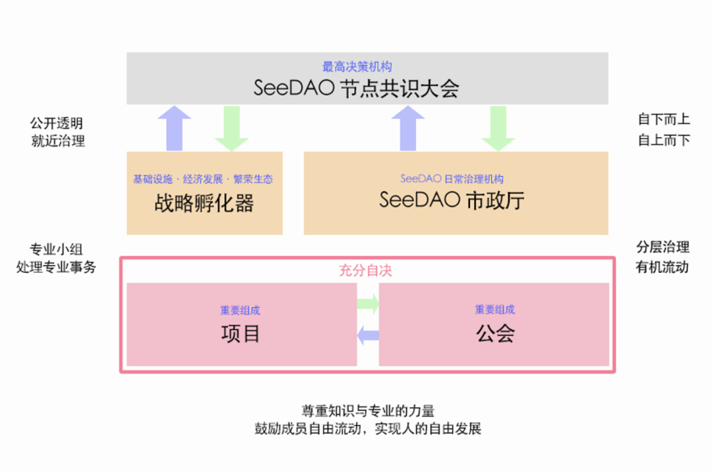

序言 ✦
SeeDAO 是一个基于区块链的数字城邦，其表现形态为去中心化的数字网络（SeeDAO Network）和映射在全球各地的物理据点 ( SeeShore )，由SeeDAO成员共建、共治、共享。
第一章：SeeDAO 成员的权利与义务
✦
成员是 SeeDAO 基本单元。SeeDAO 的一切权限、责任、收益、风险，最终与 SeeDAO 成员相关。
满足以下任一条件者，均可被认定为 SeeDAO 成员：
a. SeeDAO PoW 账本上被记录的贡献者；
b. SeeDAO SGN 或 身份 MSC 持有者。
SeeDAO 成员享有知晓 SeeDAO 历史、接受 SeeDAO 教育、参与 PoW 获得薪酬回报、竞选SeeDAO 公共岗位、监督 SeeDAO 公共服务、维护 SeeDAO 公地利益、依据 SeeDAO 规则自由表达、依据贡献度参与相应层级治理之权利。
与之相应，SeeDAO 成员具有同步 SeeDAO PoW 账本、在 DAO 内参与工作前明晰相应权责利、维护 SeeDAO 公地利益、遵守 SeeDAO 元规则及相应规则并保护其不受践踏之义务。
第二章：SeeDAO的治理原则及架构
✦
2.1 治理原则
SeeDAO 遵循自下而上与自上而下相结合、分层治理、有机流动、公开透明的治理原则。 SeeDAO 采用分层治理结构，鼓励就近治理、专业小组处理专业事务，充分尊重知识与专业的力量。 SeeDAO 鼓励成员依据专长和兴趣爱好在各个公共岗位、各个公会、各个项目之间流动，充分利用 SeeDAO 资源进行创造，并积极参与 SeeDAO 各层级治理，实现人的自由发展。 SeeDAO 公共岗位招聘、国库资产进出、重大公共事务决策、PoW 账本更新应该保持公开透明，以便于接受社区成员的监督。
2.2 治理架构

由 SeeDAO 节点构成的 SeeDAO 节点共识大会是 SeeDAO 的最高决策机构。大会每三个月召开一次，遵循一人一票的原则，对 SeeDAO 的重要事项进行决策；
由 SeeDAO 公共服务者构成的 SeeDAO 市政厅是 SeeDAO 的日常治理机构，每三个月轮换一次。SeeDAO 的日常治理事项由市政厅负责，具体运行细节参见《SeeDAO治理手册》。
SeeDAO 战略孵化器负责 SeeDAO 的经济发展，孵化 SeeDAO 发展所需的基础设施，充实 SeeDAO 的金库。战略孵化器的治理原则是专家治理。
公会和项目是 SeeDAO 的重要组成部分。在不违反《SeeDAO元规则》及《SeeDAO治理手册》的情况下，公会和项目均享有自决权。
第三章：节点共识大会
✦
3.1 节点
参与 SeeDAO 的公会、项目和 SeeDAO 公共服务活动越多，成员的贡献度越高。在一个治理季度内，为 SeeDAO 贡献到一定程度以上的社区成员成为该季度的 SeeDAO 节点。 SeeDAO 节点享有参与 SeeDAO 节点共识大会，对 SeeDAO 重大事务进行决策并获取相应激励之权利；同时，也具备对 SeeDAO 发展尽责之义务。 节点的产生、延续及激励的具体细节，参见《SeeDAO节点共识大会规则》。
3.2 节点共识大会
节点共识大会是SeeDAO的最高权力机构，每三个月召开一次。 参与共识大会的SeeDAO节点是大会所有事项的决策者，实行一节点一票的投票原则。 由市政厅负责组织召开节点共识大会大会，其细节参见《SeeDAO节点共识大会规则》。 节点共识大会具备的权力有： 听取市政厅和战略孵化器上一季度的工作汇报，评定市政厅的工作成绩； 选举下一届市政厅公共服务人员，公示战略孵化器的工作人员名单； 审批下一季度给予市政厅的预算及战略孵化器申请的季度额外预算； 决策由市政厅提出的除《治理手册》外的其他II级规则新增、删减、修改提案，判定SeeDAO其他社区规则是否违反元规则； 对SeeDAO成员的重要提案进行决策； 决定下一届节点共识大会节点的门槛。 执行上述权力时，投票节点数超过当季节点总数的50%，且赞成票占所有投票的比例超过50%方可执行； 节点共识大会具备修改SeeDAO元规则的权力，见”第九章：元规则实行及修改“。
第四章：市政厅
✦
市政厅是 SeeDAO 的公共服务机构，负责 DAO 层面的治理事务。
市政厅内设有各自独立、平级运作的公共岗位，共同对全 DAO 提供治理服务。除部份以时薪或按次计算、月结的岗位，薪酬支付方式以每一季结束后补偿为原则。 市政厅具有以下权力：
提出 SeeDAO在一个治理季度内的活动计划。
依据《SeeDAO治理手册》，为SeeDAO的日常治理服务，包括社区运营、品牌公关、媒体账户、对外联络、财务管理、SeeDAO融资、线下空间法律及会计事务等。
协助并完善 SeeDAO 成员日常发起的社区提案。
发起《SeeDAO治理手册》修改提案及《SeeDAO节点共识大会》修改提案。
依照《SeeDAO节点共识大会组织规则》按期筹备和召开节点共识大会。
市政厅有向节点共识大会提交当季工作回顾、下一季度预算申请之义务。
市政厅设有一个多签的链上金库，称作市政厅金库。每一季经由大会通过预算建议后，由社区金库打入所需资金，补充金库到当季要求。市政厅金库资金用于 SeeDAO 成员提案，且不得以预支社区金库名义超额承诺发放。
市政厅所有岗位一季一任，每一季结束后需在节点共识大会重新选举。
第五章：战略孵化器
✦
5.1 战略孵化器的使命
孵化 SeeDAO 以及生态所需的基础设施，为数字城邦提供 DAO 的底层操作系统。 为 SeeDAO 造血，实现经济可持续发展。 向 Web3 输出 DAO 时代基础设施，繁荣 SeeDAO 生态，形成 D2D 网络。
5.2 战略孵化器的治理
在治理架构上，战略孵化器与市政厅平级，按季度向 SeeDAO 节点共识大会汇报工作，并在成立之初一次性申请全部运营预算。 战略孵化器采用偏中心化方式运作，由专家治理，自行决定内部岗位、任期和换届事宜。
5.3 战略孵化器的权力
SeeDAO 使用何种 DAO Tool 以及其他基础设施由战略孵化器决定。 战略孵化器代表 SeeDAO 与被孵化项目展开谈判，并签署协议。 为宣传战略孵化器和所孵化项目，战略孵化器有权使用 SeeDAO 品牌和媒体账号。 战略孵化器初始孵化资金为 100 万 U，全部用于孵化项目。
5.4 金库管理与收益分配
第六章：公会与项目
✦
SeeDAO 公会是由具有相同技能专长和兴趣爱好的 SeeDAO 成员，一同围绕相关主题讨论交流、发起活动而形成的组织。公会能起到为SeeDAO蓄积和培养专业人才、提供专业教育、促进人才交流协作的作用。 SeeDAO 项目是从 SeeDAO 中发起的有计划性、目的性的组织，将围绕在项目规划上进行各项活动，其类别包括兴趣小组、公会内部项目、SeeDAO公共项目、SeeDAO孵化项目及短期项目等。 无论公会与项目，皆需遵循 SeeDAO 治理手册相关约定。 在不违反《SeeDAO元规则》和《SeeDAO治理手册》的情况下，公会与项目享有自决权。其他平行公会、社区项目、战略孵化器、市政厅与节点共识大会有义务尊重公会自决权，且除8.1.3所示情况外，无权干涉公会与项目自决权范围内事务。
第七章：SeeDAO 代币经济模型
✦
SeeDAO 的 token 代号为 $SEED，总量 10 亿枚。其中 25% 归属于 CryptoC 团队（包含给予第一轮投资人的 token ），15% 归属于A轮及之后的 SeeDAO 投资人，60% 归属于社区。预计 $SEED 的发行时间为 2024 年 2 月。
其中，归属于社区的 6 亿枚 $SEED，有 1 亿枚用于 SeeDAO 发展的其他需求。余下的5亿枚$SEED token，全部由社区贡献者以“POW”的形式挖出，并记录到 POW 账本。
7.1 代币产生
POW原则 所谓通过POW原则发放 $SEED，是指贡献在适当参考市场价格与SEED未来成长性的基础上，按照$SEED的公认价值来计算发放$SEED的数量。 在POW原则下，$SEED的释放速度取决于两个条件：$SEED的价格和贡献总量的参照价格。 关于SeeDAO认定的POW类别及相应激励，参见《SeeDAO治理手册》。 治理挖矿：奖励参与节点共识大会的节点 根据POW原则，SeeDAO给予构建和维护SeeDAO网络的节点相应奖励。节点参与SeeDAO治理而获得相应token激励的行为即为治理挖矿； 治理挖矿是 POW 的一部分，其挖矿产生的 $SEED 被包含在 POW 每年上限 5% 的预算之内； 治理挖矿数额为该治理季度除治理挖矿以外POW所产生token数量的二十分之一。
7.2 代币解锁
第八章：元规则实行及修改
✦
8.1 元规则的实行
依照 SeeDAO 的治理结构，SeeDAO 的规则相应分为三个级别：
SeeDAO 元规则为 I 级规则；
除 SeeDAO 元规则外，其他涉及到整个 SeeDAO 治理范围的规则为II级规则；
SeeDAO内部各公会和项目自行制定，仅适用于公会和项目内部的规则为III级规则。
在SeeDAO设立的 II 级规则和 III 级规则均不得与 SeeDAO 元规则相悖，否则视为无效。
共识大会可判定 II 级规则和 III 级规则是否违反元规则。
共识大会对 II 级规则及其修订案具备是否通过的决定权。
在第一届节点共识大会召开之前，市政厅出台的《SeeDAO节点共识大会临时规则》和《SeeDAO治理临时手册》具有与《SeeDAO节点共识大会》规则与《SeeDAO治理手册》同等效力。
8.2 元规则的修改
如需修订元规则，则元规则修订案需由超过三分之一的SeeDAO前届节点向当届SeeDAO节点共识大会共同提案，并由超过三分之二的当届节点赞成方可生效。 元规则修订案通过后，由SeeDAO节点共识大会授权SeeDAO市政厅完成版本更新和发布。
论坛提案链接：
https://forum.seedao.xyz/thread/39871